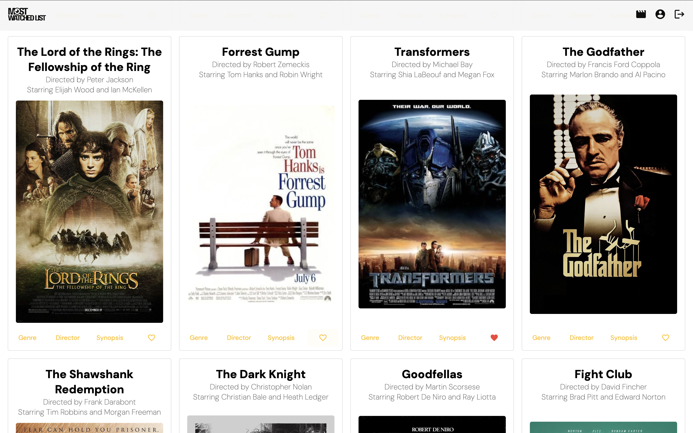
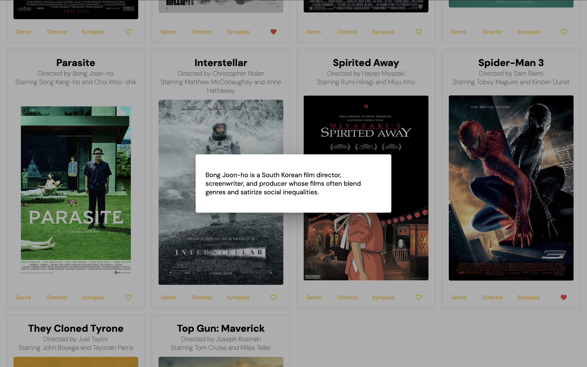
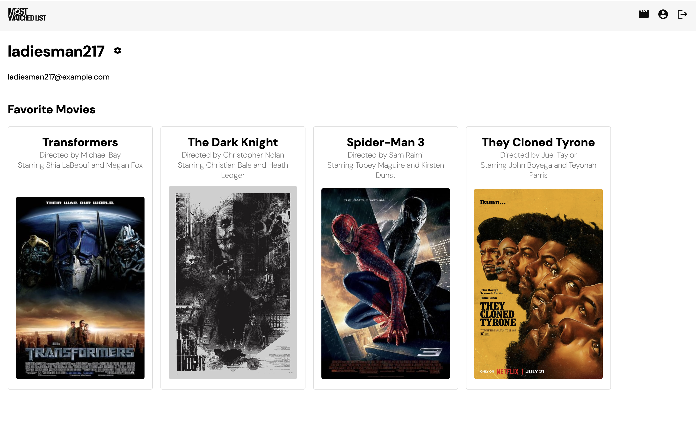
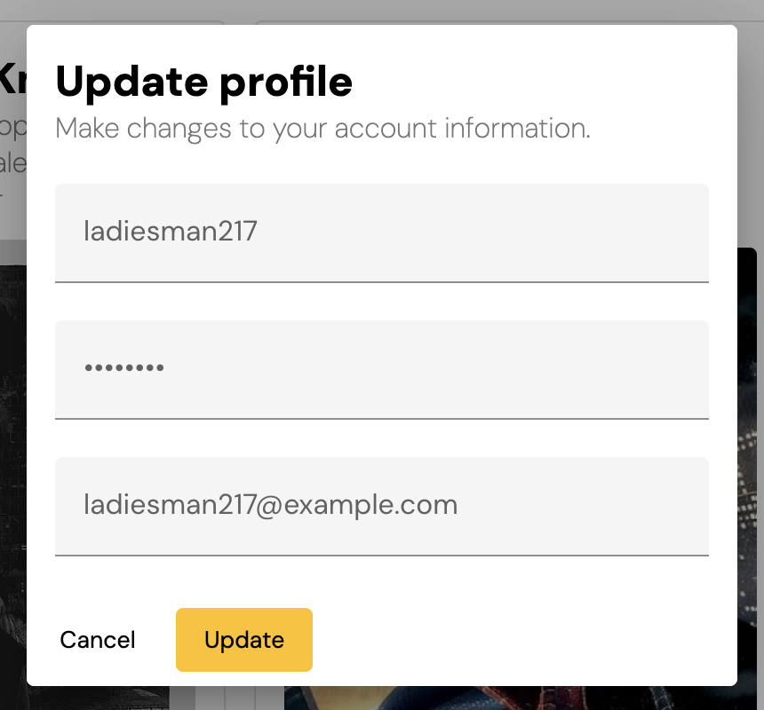

The Angular-built client-side for an application called Most Watched List based on its existing server-side code (REST API and database), with supporting documentation.
Run ng serve for a dev server. Navigate to http://localhost:4200/. The application will automatically reload if you change any of the source files.
Run ng generate component component-name to generate a new component. You can also use ng generate directive|pipe|service|class|guard|interface|enum|module.
The main view includes movie cards for all of the movies in the database. The actions at the bottom of each card trigger a modal with more details:
 
The profile view renders the user's username, email, and favorite movies:
 
Run ng build --output-path docs --base-href /your-project-name/ to build the project. The build artifacts will be stored in the dist/ directory.
Note: Be sure to include the slashes on either side of your project name as in /your_project_name/
When the build is complete, make a copy of docs/index.html and name it docs/404.html.
Commit your changes and push.